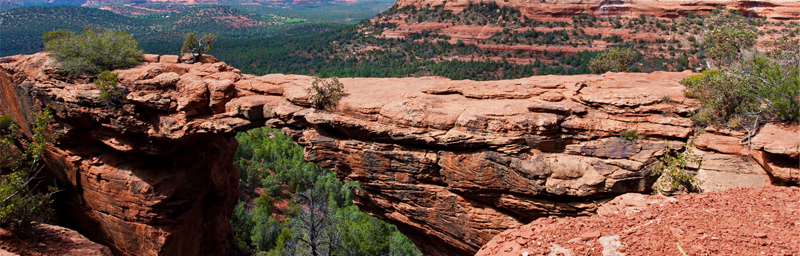

Городок Седона

СЕДОНА-НЕБОЛЬШОЙ ГОРОДОК В АРИЗОНЕ,
ЗАСЛУЖИВАЮЩИЙ БОЛЬШЕГО!
РАССМОТРИМ 5 ПРИЧИН, ПО КОТОРЫМ СЕДОНА КРУЧЕ, ЧЕМ ГРАНД КАНЬОН!
-
НАСТОЯЩИЙ
ГОРОДОК-#1-
СЕДОНА-НЕ АТТРАКЦИОН ДЛЯ ТУРИСТОВ, ТАМ
ТЕЧЕТ СВОЯ ЖИЗНЬ -

ЖИЛЬЁ
РЕКОМЕНДУЕМ ПОЖИТЬ В НАСТОЯЩЕМ
МОТЕЛЕ, ВСЁ КАК В КИНО! -

ЕДА
ВСЕГДА ЗАКАЗЫВАЙТЕ ФИРМЕННЫЙ БУРГЕР,
ВЫ НЕ РАЗОЧАРУЕТЕСЬ! -

СУВЕНИРЫ
НЕ ТОЛЬКО КИТАЙСКОГО, НО И МЕСТНОГО
ПРОИЗВОДСТВА!

-
ТАМ ЕСТЬ
МОСТ ДЬЯВОЛА-#2-
ДА, ПО НЕМУ МОЖНО ПРОЙТИ! ЕСЛИ КОНЕЧНО
ВЫ ОСМЕЛИТЕСЬ -
НЕБОЛЬШАЯ
ПЛОЩАДЬ-#3-
ВСЕ ДОСТОПРИМЕЧАТЕЛЬНОСТИ
НАХОДЯТСЯ ОЧЕНЬ БЛИЗКО -
КРАСИВАЯ
ДОРОГА-#4-
ЕХАТЬ В СЕДОНУ ИЗ ЛАС-ВЕГАСА СОВСЕМ
НЕ СКУЧНО! -
МАЛО
ТУРИСТОВ-№5-
БОЛЬШИНСТВО ЕДЕТ В ГРАНД КАНЬОН
И ТОЛПИТСЯ ТАМ

ЗАИНТЕРЕСОВАЛИСЬ?
УКАЖИТЕ ПРЕДПОЛАГАЕМЫЕ ДАТЫ ПОЕЗДКИ,
И МЫ ПОКАЖЕМ ВАМ ЛУЧШИЕ
ПРЕДЛОЖЕНИЯ ГОСТИНИЦ В СЕДОНЕ